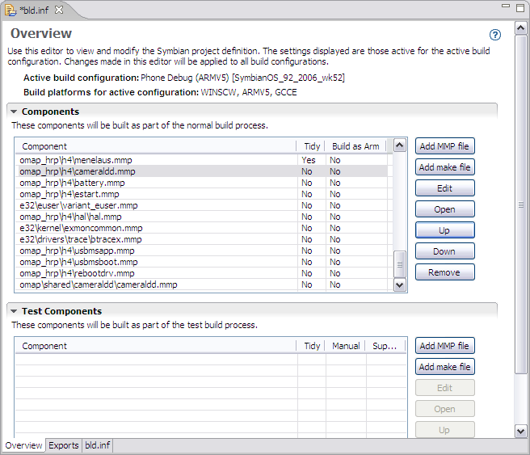

The INF Editor allows you to view and modify Symbian project files and export files to be included in building your application. The settings displayed are those active for the active build configuration. However, changes made in the INF editor can be applied globally to all build configurations. Changes made in the INF editor are automatically written to the project's .INF file. You can view the .inf file by selecting the bld.inf tab located along the bottom of the INF editor.
The INF Editor is shown when an INF file is opened from the C/C++ Projects view or Symbian Project Navigator view by double-clicking on the file. The INF Editor is shown in Figure 1.

Figure 1 - INF Editor
| Name | Function |
|---|---|
|
Components |
Add components such as MMP and make files to be part of the normal build process.
|
|
Test Components |
Add, edit, open, move, or remove MMP and make files that are part of a test build process. |